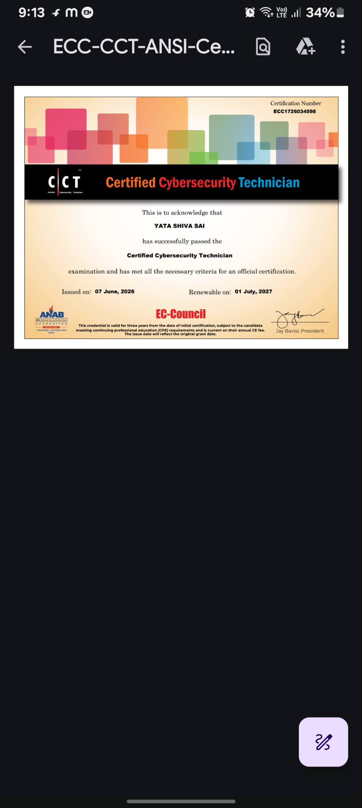

Cybersecurity
Authorized lab testing, web security concepts, reconnaissance, and security documentation.
Burp SuiteNmapHTB Labs
CYBERSECURITY · DEVELOPMENT · AI / IoT
I'm Shiva Sai — an engineering student exploring cybersecurity, software development, and intelligent connected systems. I learn by building, testing, and documenting real projects.
01 / A LITTLE ABOUT ME
I enjoy understanding how systems work — from networks and web applications to microcontrollers and sensor data.
My interests span ethical security testing in authorized labs, building useful software, and experimenting with AI-powered IoT systems. I aim to turn curiosity into practical skills and projects that solve real problems.
This portfolio is a living record of what I build, what I learn, and where I'm headed next.
02 / TOOLKIT
A snapshot of my current learning and project toolkit. Skills grow through practice.
Authorized lab testing, web security concepts, reconnaissance, and security documentation.
Writing scripts, automating repetitive tasks, and building practical web applications.
Connecting sensors and microcontrollers to dashboards and exploring edge ML.
Linux workflows, networking fundamentals, troubleshooting, and service deployment.
03 / SELECTED WORK
Explore each project topic on GitHub. Direct repository links can be added as the projects are published.
An IoT concept using ESP32 and air-quality sensors to collect readings, visualize pollution trends, and explore on-device classification with TensorFlow Lite Micro.
Find project repository ↗$ inspect --scope lab
[+] Scope verified
[+] Evidence collected
$ document findings▌
A structured collection of authorized practice-lab notes, methodology, observations, and remediation ideas.
Explore security repos ↗A messaging-app project exploring a clean interface and the building blocks needed for real-time communication.
Find Q Chat repository ↗04 / CERTIFICATIONS
Open the certificate files included with this portfolio. Add verification links for any additional credentials when available.

Certificate image · Issued June 2026
View certificate ↗Certificate of completion · PDF
Open certificate ↗Listed in your CV. Add certificate image or verification URL to display proof.
Listed in your CV. Add certificate image or verification URL to display proof.
05 / MILESTONES
Third-place finish at an IIT hackathon in 2025. Add the official event name or award link when available.
Ranked 27th in an HTB CTF; continuing to practise in authorized cybersecurity labs and document findings.
Add only certifications you have earned, with issuer, issue date, and verification link. List in-progress exams separately.
Project and achievement details reflect the information currently provided. Add public proof links wherever possible.
06 / YOUR NEXT IDEA STARTS HERE
Open to learning opportunities, collaborations, and conversations about security, software, and IoT.
Have a project, opportunity, or idea in mind?
yatashivasai50@gmail.com ↗ +91 93924 30311 Call ↗ Built with curiosity · Open to collaboration and learning.